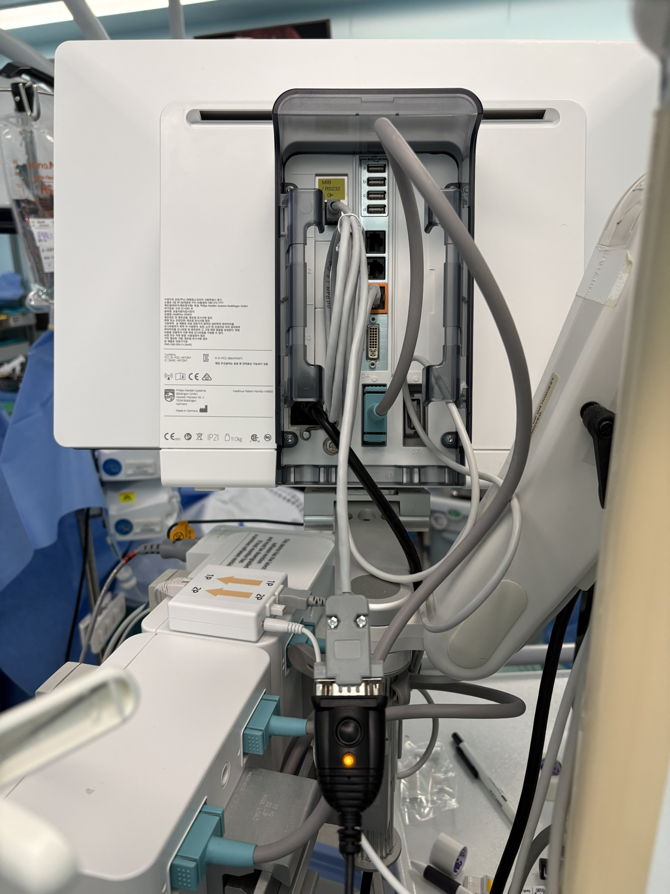
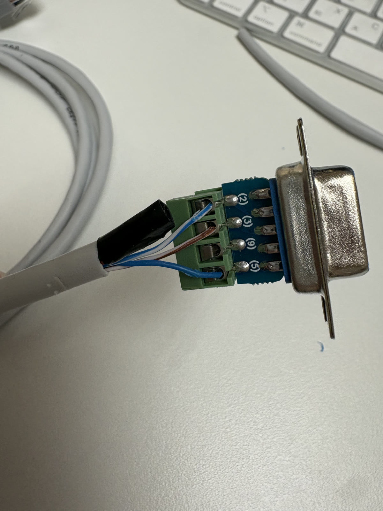
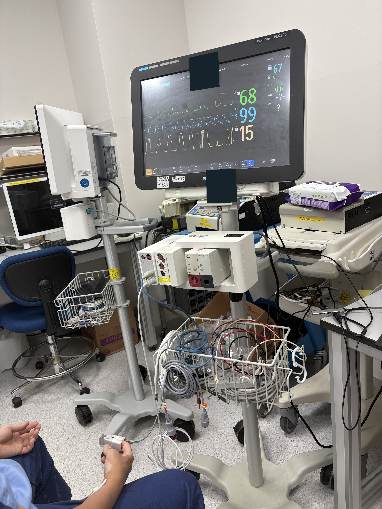

바이탈바이탈 연결 2026.07 — 10
케이블 제작부터
XR 파형 표시까지
Philips 모니터용 케이블을 직접 만들고, 수치와 파형을 받아 XR에 표시하기까지의 과정입니다.
제작 과정 읽기202602 — 10

바이탈바이탈 연결 2026.07 — 10
Philips 모니터용 케이블을 직접 만들고, 수치와 파형을 받아 XR에 표시하기까지의 과정입니다.
제작 과정 읽기 영상 입력
영상 입력내시경 영상 연결 2026.04 — 10
장비마다 다른 출력을 Mac·XR에 연결하고, 눈당 Full HD 전송까지 개선한 과정을 담았습니다.
장비별 글 보기
한국형 ARPA-H · 로봇 헤드 디스플레이 · 2026.08 — 09
앱 3종 · 상태 API · Python 연동

로봇 시연 데이터 수집 · 2026.05 — 06
녹화 동기화 · 그리퍼 보정 · 데이터 내보내기
38개의 주요 기록
Galaxy XR의 Full Space 진입을 수정해 공간 화면 표시를 확인했습니다.
관련 자료 보기 — 준비 중캡처카드의 라이브 영상을 WebRTC로 받기 시작했습니다. 수신 중 반복해서 멈추는 문제가 있어, 이후 전송과 재생 처리를 개선했습니다.
관련 자료 보기 — 준비 중1280×720·30fps 조건에서 Mac → Galaxy XR H.264, Vision Pro HEVC 경로를 시험했습니다.
관련 개발 기록 읽기거리, 화면 크기, 전송 상태와 사용자 반응을 함께 남기도록 측정 항목을 정리했습니다.
관련 자료 보기 — 준비 중실제 캡처 프레임률에 맞춰 송신 시각을 수정하고, 입력·송신·수신 프레임을 나누어 기록했습니다.
관련 자료 보기 — 준비 중60fps 캡처와 앱의 30fps 송신 제한이 맞물려 인코딩 속도가 떨어지는 문제를 수정했습니다. 캡처도 30fps로 맞춘 뒤 6분 이상 구간에서 정지가 감지되지 않았습니다.
관련 개발 기록 읽기초광각·RGB·depth 저장 큐, 기기 식별과 진단 기록을 정리했습니다.
관련 개발 기록 읽기보정과 시연 한 쌍을 HoMMI로 처리해 영상·깊이·위치·자세·그리퍼 폭을 하나의 데이터로 묶었습니다.
관련 개발 기록 읽기보정 기록 선택을 추가하고, 녹화 시작 전에 영상 파일 저장을 준비하도록 구성했습니다.
관련 개발 기록 읽기화면 갱신과 협업 데이터 처리 경로를 조정했습니다. 30초 Left Slave 비교에서 Pose 기록은 609 → 1,805, RGB는 50 → 151로 늘었습니다.
관련 개발 기록 읽기CT에서 만든 모델을 VTK에서 GLB 형식으로 변환하고, XR에 저장·동기화하는 경로를 정리했습니다. 7월에는 CT·MR 단면 탐색 조작을 추가했습니다.
관련 자료 보기 — 준비 중7월 9일 회수한 STORZ USB 시험 로그에는 1920×1080·60fps 설정의 실행 다섯 회가 담겨 있습니다. 799개 FPS 표본의 평균은 59.64fps였습니다.
관련 개발 기록 읽기HR·SpO₂·혈압을 Mac에서 읽고 별도 WebSocket으로 XR에 전달하는 구성을 정했습니다. 생성 데이터 1Hz 전송부터 준비했습니다.
관련 개발 기록 읽기OTV-S700 후면 사진 8장으로 SDI 출력을 확인했습니다. 기존 녹화 연결을 유지하면서 SDI–HDMI 변환기와 캡처카드로 Mac에 연결할 경로를 준비했습니다.
관련 개발 기록 읽기영상에 일정한 지연을 더한 뒤 분석 프로그램이 그 차이를 찾아내는지 12회 시험했습니다.
관련 자료 보기 — 준비 중12G OUT1의 변환·캡처 경로에서 겹친 영상과 헤드 분리 시 컬러바를 확인했습니다.
관련 개발 기록 읽기OTV-S700의 SBS 출력을 Mac·Galaxy XR 앱으로 연결했습니다. 실시간 전송을 위한 해상도·프레임률 설정을 조정하며 조건별 수신 로그를 남겼습니다.
관련 자료 보기 — 준비 중
MX850의 MIB/RS232 연결을 목표로 배선·절연·하우징을 제작하고 도통과 USB 인식을 확인했습니다.
관련 개발 기록 읽기
Fix115200·DtOut1 설정으로 MDS 응답을 받았지만, 67초와 189초 실행 모두에서 수치는 수신되지 않았습니다.
관련 개발 기록 읽기지연을 줄이기 위한 축소 설정으로 CV-190 두 입력과 OTV-S300 단일 SBS 입력을 전송했습니다. 각각 5개·8개 분석 구간에서 주 수신 유효 영상 크기는 좌우 합계 1280×360·1280×720이었습니다.
관련 개발 기록 읽기 — 준비 중63분 18초의 대응 로그를 분석했습니다. 약 60fps를 유지하면서 수신 해상도가 낮아진 뒤 복구되지 않은 구간을 찾았습니다.
관련 개발 기록 읽기 — 준비 중단일 SBS 입력에서 Half·Full 선택을 바꿔도 송신 영상은 1280×720에 머물렀습니다. 고정 축소 설정과 네트워크 대역폭에 따른 해상도 조정을 점검하고, 재연결 뒤 중복 통계를 구분해 분석했습니다.
관련 개발 기록 읽기 — 준비 중인식 문장 길이에 따른 글자 크기를 조정하고 카드 높이를 고정했습니다. 단위 테스트 47개를 통과하고 APK를 생성했습니다.
관련 개발 기록 읽기DB 재조회와 70–80ms 화면 진입 대기를 제거했습니다. 단위 테스트 65개를 통과하고 APK를 생성했습니다.
관련 개발 기록 읽기로봇에 장착된 음성 명령 상태 화면이 시연 보도 사진에 기록됐습니다.
관련 개발 기록 읽기1920×1080 H.264 전송 설정을 적용한 뒤, AC 전원 21분 13.769초 구간에서 약 59.82fps·20.102Mbps를 기록했습니다. HD OUT3·12G OUT2·3G 출력도 비교했습니다.
관련 개발 기록 읽기실물 MX750의 DEMO 응답을 읽고 숫자 해석을 수정했습니다. 저장한 응답으로 Mac 화면을 재확인했습니다.
관련 개발 기록 읽기MX800의 영상 캡처와 수치 수신을 비교했습니다. 수치 경로는 405초·843 Poll·187,544바이트, 중단 후 자동 재연결 6회를 기록했습니다.
관련 개발 기록 읽기
데이터 수신 시각의 계산과 파형 표시를 수정했습니다. 생성 신호로 화면을 시험한 결과, 파형이 사라진 프레임은 481개 중 24개에서 698개 중 0개로 줄었습니다.
관련 개발 기록 읽기생성 DEMO 입력으로 파형을 재생했습니다. 영상 위에 겹쳐 보는 수치 창은 제목과 닫기 버튼을 없애 작게 표시하도록 바꿨습니다.
관련 개발 기록 읽기TestFlight 빌드를 업로드하고 새 Mac Studio에서 앱을 실행했습니다. 다음 날 Studio → Galaxy XR 바이탈 수치 표시를 확인했습니다.
관련 개발 기록 읽기이동식 테이블에 모니터·키보드·마우스를 배치하고 새 Mac Studio를 이용한 시험 구성을 준비했습니다.
관련 개발 기록 읽기내시경 영상, 바이탈 파형과 CT 참조 단면을 함께 표시한 현장 녹화를 남겼습니다.
관련 개발 기록 읽기10월 15일 재생 시험에서 파형 버퍼를 1.024초로 늘렸습니다. 17일에는 DEMO를 45.057초 실행해 18,040샘플을 기록했으며, 빈 값·누락·샘플 시각의 불연속은 없었습니다.
관련 개발 기록 읽기합성 표적의 수신 영상을 분석해 전송 조건별 화질을 비교했습니다. 착용자가 실제로 구별할 수 있는지는 별도 평가로 남겼습니다.
관련 자료 보기 — 준비 중녹화 PC와 컨버터를 조사하고, 1920×1080·3840×1080 저장 파일의 속성을 기록했습니다.
관련 개발 기록 읽기 — 준비 중ECG 처리 수정 후 Galaxy XR의 수신 로그에서 세 종류 파형을 확인했습니다.
관련 개발 기록 읽기Full SBS 합성 뒤 남아 있던 송신 축소를 제거했습니다. 좌우 합계 3840×1080, 눈당 1920×1080으로 전송했으며 Galaxy XR의 평균 디코딩 프레임률은 59.861fps였습니다.
관련 개발 기록 읽기다음 방향
영상·바이탈 표시를 바탕으로 전용 송신 장치와 수술 보조 연구를 준비합니다.